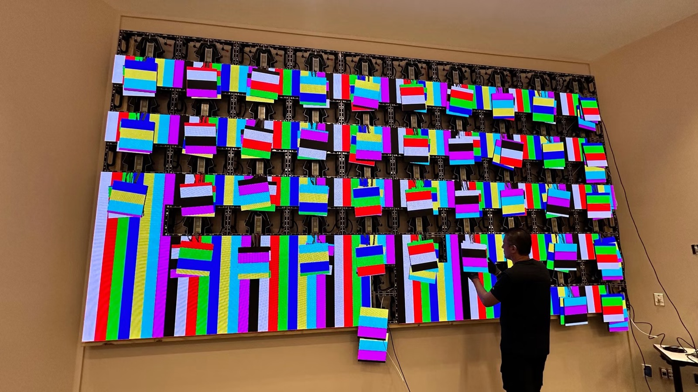
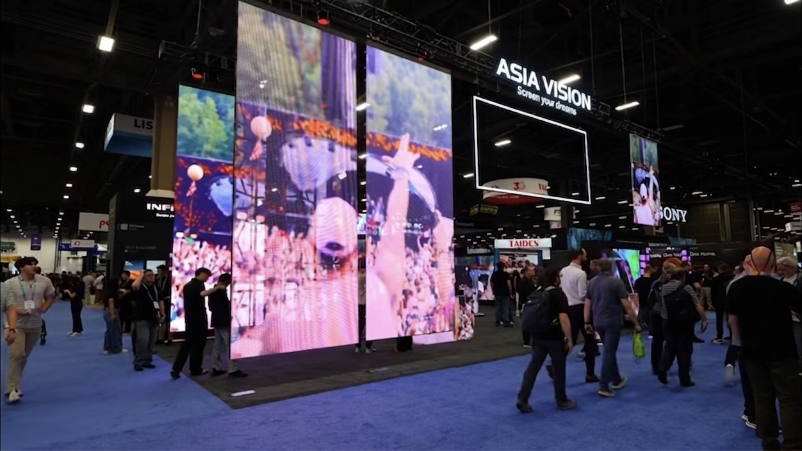

By Cassie
What does an Indonesia LED display importer need to know? Importing LED displays into Indonesia means obtaining the right import licence, confirming SNI compliance where it applies, clearing goods through customs, and specifying equipment for tropical heat and humidity. This 2026 guide explains the process.
Indonesia is a large and growing market for LED displays, driven by retail, transport, and government projects. The import process is documented and structured, and a buyer who prepares the paperwork before the goods ship clears them without difficulty.
An Indonesia LED display importer who confirms the licence route and the standard position in advance avoids the delays that catch buyers who treat the process as routine. The tropical climate is the second consideration and affects long-term reliability.
Before the paperwork, it helps to know who is actually buying LED displays in this market — the demand pools are not identical, and they buy differently.
| Demand pool | What they buy | How they buy |
|---|---|---|
| Retail and malls | Indoor fine pitch, mall atrium screens | Large mall culture; brand-driven specification |
| Government and public space | Information displays, city screens | Public procurement with SNI documentation |
| Banking and corporate | Branch signage, control rooms | Rolled out across branch networks |
| Events and exhibitions | Rental walls | Jakarta-centred, growing island-wide |
Indonesia spreads across many islands, so logistics and spare-parts access shape the buying decision as much as price. Government projects demand full SNI conformity files before award.
An Indonesia LED display importer needs a valid business licence and an importer identification number registered with the customs authority. Certain product categories also require an import approval or a surveyor report before goods can be cleared.
Confirm the requirements for the specific code before ordering. A screen and its components may fall into different categories, and one line may need an approval that another does not. Checking at the planning stage costs nothing.
| Step | What Is Required | Who Handles It |
|---|---|---|
| Business licence | Valid company licence with import activity | Importer |
| Importer identification | Customs registration number | Importer |
| Import approval | Where required for the category | Importer |
| Surveyor report | Pre-shipment inspection where required | Importer and supplier |
| Customs declaration | Entry with code and value | Broker |
| SNI compliance | National standard where applicable | Supplier, verified by importer |
Work with a customs broker who understands electronic goods, because the classification of displays, power supplies, control cards, and mounting steel differs and each line carries its own treatment.
Some electrical products entering Indonesia must comply with national standards and carry the corresponding mark. Whether an LED display falls under a mandatory standard depends on the product category and the current rules.
Ask the supplier for test reports and certificates before the order. A supplier who can provide evidence makes the compliance step straightforward, while one who cannot leaves the importer to obtain it after manufacturing.
| Requirement | What It Covers | Evidence to Hold |
|---|---|---|
| SNI conformity | Compliance with the national standard | Certificate where applicable |
| Safety test report | Electrical safety of the equipment | Report naming the offered model |
| EMC test report | Electromagnetic compatibility | Report naming the offered model |
| Technical file | Drawings and specifications | Complete file held by the importer |
| Indonesian labelling | Product information for the market | Label artwork |
| Warranty documentation | Coverage terms | Written warranty statement |
Keep the technical file after the goods are sold, because the authorities may request it during the life of the product, and the same file supports a warranty claim.
Duty is calculated on the customs value, normally the transaction value adjusted to the agreed Incoterm. Indonesia applies a tariff schedule with rates that vary by commodity code, and value added tax plus import income tax apply on top.
| Cost Element | Basis | Notes |
|---|---|---|
| Customs duty | Commodity code and value | Rate varies by code |
| Value added tax | Value plus duty | Standard rate applies |
| Income tax on import | Value plus duty | Withheld at import |
| Broker fee | Per declaration | Varies by broker |
| Port and storage | Per day after the free period | Mounts if documents are late |
| Inland transport | By distance and size | Confirm delivery to site |
Because several charges apply on top of duty, the landed cost can be meaningfully higher than the ex-works price. Model the full cost before comparing suppliers, and treat the customs value as the figure that drives most of the add-ons.
Be careful not to undervalue the goods. Undervaluation is a common cause of penalties in Indonesia, and the declared value must reflect the actual price paid.
Indonesia's climate combines high temperature with high humidity, and the combination is harder on electronics than either factor alone. Corrosion affects connectors and exposed metal, while heat stresses power supplies and driver boards.
For Indonesian sites, humidity and salt-laden coastal air make sealed cabinets the deciding factor: the COB EF outdoor series (IP65, 3000 nits) and the COB ZH touring series (sealed, 3400–4000 nits) are built for exactly this duty.
Choose cabinets with effective sealing and corrosion protection, and confirm the power supply's temperature and humidity rating. Coastal sites are more demanding than inland ones, because salt air accelerates corrosion.
| Condition | Risk | Specification Response |
|---|---|---|
| Year-round humidity | Connector corrosion | Sealed cabinets and contact treatment |
| Tropical rain | Water ingress on outdoor screens | High ingress rating and drainage |
| High ambient heat | Thermal stress on power supplies | Higher temperature rating |
| Coastal salt air | Accelerated corrosion | Corrosion-protected hardware |
| Volcanic ash in some regions | Cooling path contamination | Filtration and cleaning schedule |
| Unstable supply voltage | Driver damage | Power conditioning on site |
Where the site is in a region affected by volcanic ash, plan a more frequent cleaning routine. Ash is abrasive and blocks cooling paths quickly, and the cleaning cost is far lower than a thermal failure.
Most LED display cargo reaches Indonesia by sea, with air freight reserved for urgent spare parts. Transit times vary by route and port, and congestion at major ports can add days during peak periods.
| Stage | Typical Duration | What Can Delay It |
|---|---|---|
| Production | 15 to 25 working days | Component availability and queue |
| Inland to port and export | 3 to 5 days | Booking availability |
| Sea freight | Varies by route and port | Congestion at major gateways |
| Import clearance | 3 to 7 days | Licence or documentation queries |
| Inland delivery | 2 to 7 days | Inter-island transport where relevant |
| Total | Approximately 5 to 8 weeks | Add a buffer for the project date |
Where the project site is on a different island from the port of entry, add the domestic leg to the schedule. Inter-island transport is slower and less predictable than the international sea leg.
Ask every candidate the same questions and record the answers. For Indonesian projects the tropical specification and the licence documentation matter as much as the price.
| Question | What a Strong Answer Looks Like | Warning Sign |
|---|---|---|
| Tropical specification | Sealing and corrosion detail given | Temperate-market ratings only |
| Standard evidence | Reports supplied for the offered model | Evidence promised later |
| Licence support | Documents supplied for clearance | Not addressed |
| Spare parts availability | Stated period in writing | No commitment given |
| Service response | Stated time by fault severity | Answer avoided |
| Reference projects | References in similar climates | Logo list with no contacts |
Confirm the components in writing and require written approval for any substitution. A supplier facing a shortage may change a part quietly, and the change only appears when the screens arrive.
Each mistake is inexpensive to avoid during planning and costly after the goods land. An Indonesia LED display importer who confirms the licence route, models the landed cost, and specifies for the climate avoids most of them.
Asia Vision Technology manufactures LED displays in Shenzhen and supplies importers, distributors, and contractors across Southeast Asia. Cabinets are produced with sealing and corrosion protection suited to tropical markets, and the factory supplies the documentation Indonesian importers need.
For Indonesian projects the company supplies rental cabinets for events, fine pitch screens for retail and corporate work, and high-brightness outdoor displays for advertising. OEM and ODM production is available for distributors building their own range.

Related reading: Israel LED Display Importer Guide 2026: Standards and Customs